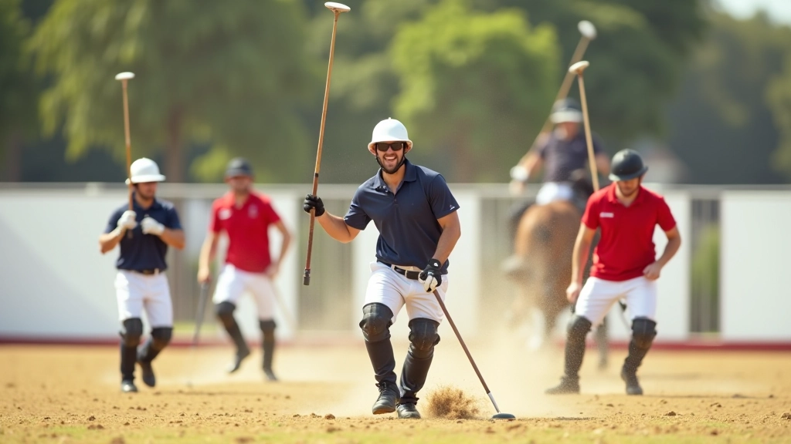

أساسيات المسك الصحيح
المسك الصحيح للعصا هو أساس أي لاعب بولو ناجح. لا يمكنك أن تحسّن مهاراتك إذا لم تتقن هذه الخطوة الأولى. الكثير من اللاعبين المبتدئين يتجاهلون هذا الجزء ويركزون على السرعة، لكن الحقيقة أن الأساس القوي يؤدي إلى أداء أفضل على المدى الطويل.
عندما تمسك العصا بشكل صحيح، تشعر بالتحكم الكامل بالكرة. يدك لا تتعب بسرعة، وحركاتك تصبح أكثر دقة. هذا يعني أنك تستطيع اللعب لفترات أطول دون أن تفقد التركيز.
وضعية اليد والأصابع
أول شيء تركز عليه هو وضعية الأصابع. إصبع الإبهام والسبابة يجب أن يكونا في الأعلى، ممسكين العصا بثبات. الأصابع الثلاثة الأخرى تلتف حول العصا من الأسفل لتوفير الدعم الإضافي. المسافة بين الأصابع مهمة جداً — لا تجعلها متقاربة جداً أو متباعدة جداً.
الشيء الثاني هو ارتخاء الرسغ. نعم، تحتاج إلى قبضة قوية، لكن الرسغ يجب أن يكون مرناً. هذا يسمح لك بعمل حركات أفقية وعمودية بسهولة. جرب هذا: امسك العصا بقوة لمدة عشر ثوان، ثم استرخي. ستشعر بالفرق فوراً.
ملاحظة مهمة
المعلومات المقدمة هنا لأغراض تعليمية وإعلامية فقط. تقنيات البولو تختلف من لاعب لآخر ومن مدرب لآخر. نوصي بشدة باستشارة مدرب متخصص وذي خبرة قبل تطبيق أي تقنية جديدة. كل لاعب له احتياجات فريدة، والتدريب الشخصي يساعد على تطوير مهاراتك بشكل أفضل.
التحكم بالكرة والحركات الأساسية
بمجرد أن تتقن المسك الأساسي، تنتقل إلى التحكم بالكرة. هذا يتطلب ممارسة يومية منتظمة. الكثير من اللاعبين يركضون مباشرة إلى المباريات الودية دون تدريب كافٍ على التحكم الفردي. هذا خطأ شائع جداً.
ابدأ بتمارين بسيطة: حرك الكرة من جانب إلى آخر على الأرض، ثم حاول رفعها قليلاً. تدريجياً زيادة السرعة والارتفاع. بعد أسبوعين من التدريب المنتظم — ثلاث جلسات أسبوعياً لمدة 30 دقيقة كل منها — ستلاحظ تحسناً واضحاً في التحكم.

نصائح عملية للتدريب
هنا بعض النصائح التي تساعدك فعلاً:
- مارس المسك الصحيح حتى وأنت جالس. لا تنتظر وقت التدريب الرسمي.
- سجل نفسك وأنت تلعب. مشاهدة الفيديو تساعد على تصحيح الأخطاء.
- تدرب مع لاعب أفضل منك. التعلم من الآخرين يسرع تطورك.
- استرخ وتنفس. التوتر يؤثر على جودة الأداء.
- لا تستعجل. الأساس القوي يأخذ وقتاً، لكنه يستحق الاستثمار.
الخلاصة
تقنيات المسك الصحيح للعصا والكرة ليست معقدة، لكنها تحتاج إلى صبر وممارسة منتظمة. ابدأ بالأساسيات، ركز على وضعية يدك، ثم انتقل إلى التحكم بالكرة تدريجياً. في غضون بضعة أسابيع، ستشعر بفرق ملحوظ في أدائك. والأهم من ذلك، ستستمتع باللعبة أكثر عندما تشعر بالسيطرة على الكرة والعصا.
استمع لنصائح مدربك، تدرب بانتظام، ولا تستسلم. كل لاعب بولو ماهر بدأ من هنا — من المسك الصحيح والتحكم الأساسي.